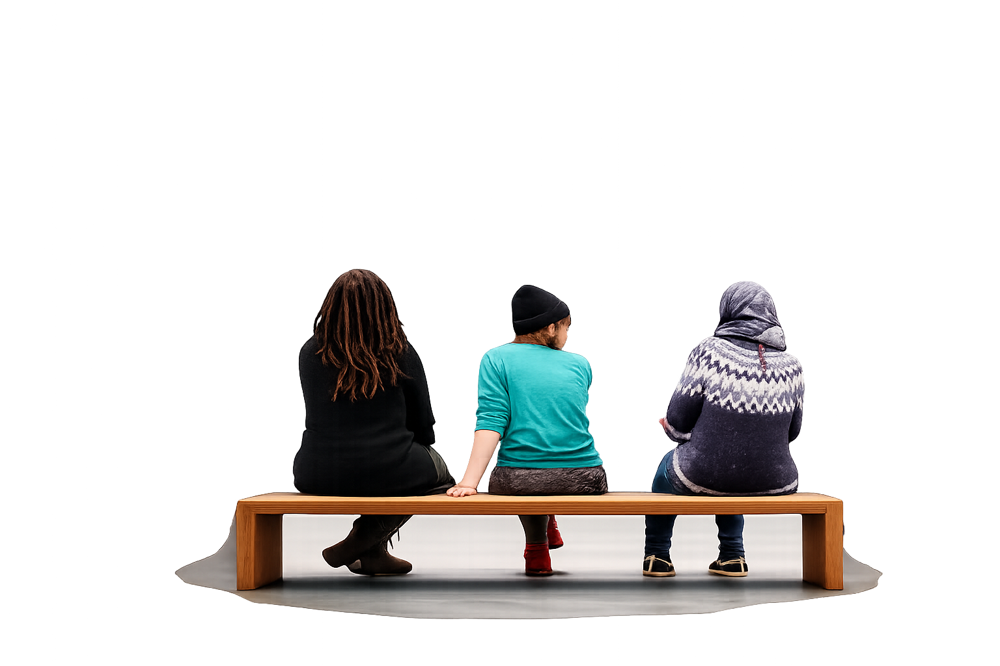

There was an activity that I did in high school, which had a profound impact on me. We wrote our names on the top of a paper and passed it to the person on our left. The person then had to write something nice about the person whose name was on the top of the paper, then pass it left. The complimenting and pass left kept going until everyone in the class wrote something nice about everyone. There were about 25 people in the class so we received 25 different compliments from 25 different people.
Years later, I had a job I didn't like and worked with people who didn't welcome me as part of the team. I had a tough time. After I changed jobs, I couldn't keep those people off my mind, so I decided to write anonymous letters to every single person at that company and tell them the good qualities that I appreciated about them and send it to them. That project took me over a year, but penning those letters was a feeling that made me grateful to be human. I found that even though I didn't like being in that environment, there was always value in it because people were there and people are valuable.
Sometime later, I ended up talking with my mom about my writing the letters, and we agreed on a new project; set a time each day, call each other and pray for someone new. I went through every contact on my phone (around 200 at that time) and Facebook when I had it (another 300 contacts or so) and messaged them, saying something like, "Hey! I respect your beliefs, and I'm not trying to push anything on you, but I just wanted to inform you that my mom and I are Christians and we pray every day at 12:30 pm PST for someone. Today, you are that person. Have an amazing day."
We prayed for hundreds of people over hundreds of days, and every single person that responded from every belief was appreciative I let them know.
It's hard to word how these projects of simply showing gratitude to people have moved me. This simple act of reflection time and again confirms what a wonderful life I truly have, and it's because of the amazing humans I come across. I pray my days walking this earth are many, but should my ending day come sooner than I hope, I want to have the satisfaction of knowing the people who were part of my life journey receive the message that they matter, they made a difference, they are appreciated, they are respected and they are loved. I want them to know how appreciated and essential they are.
I am not sure how often I will write about someone, but for the foreseeable future with no particular order, this will be my project; The People Project.
NOTE: If you are on this list and wish to remain anonymous or taken off, no hard feelings at all and I'm happy to take it down. Please just email me at steve@stevenmrose.com and let me know if that's the case.